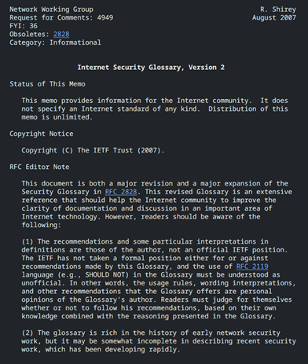
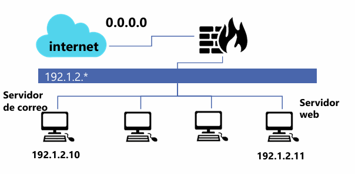
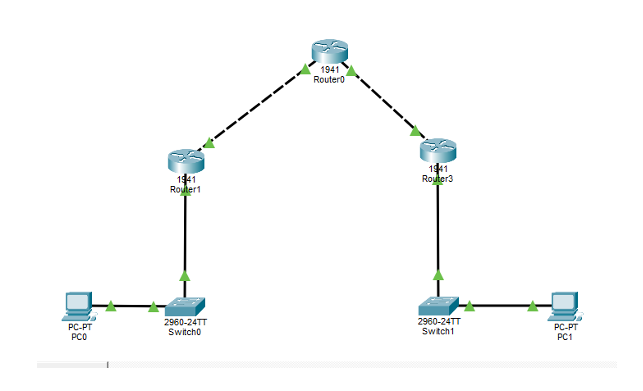

1. Introducción
El presente reporte documenta el ciberataque sufrido por Equifax en 2017, considerado uno de los incidentes de ex-filtración masiva más graves en el sector financiero. El ataque fue posible mediante la explotación de la vulnerabilidad CVE-2017-5638 en Apache Struts, la cual permitió la ejecución remota de código (RCE) debido a la omisión de un parche de seguridad disponible meses antes del incidente.
La brecha expuso deficiencias críticas en la gestión de activos y la visibilidad operativa, destacando el vencimiento de certificados SSL que impidieron la detección del tráfico malicioso durante 76 días. Con un impacto que afectó a 147.5 millones de víctimas y resultó en un acuerdo judicial de $1.4 mil millones de USD.
Este estudio tiene el propósito de evaluar las consecuencias bajo el modelo CIA (Confidencialidad, Integridad y Disponibilidad) para comprender la relación entre la ciberseguridad y la sostenibilidad organizacional.
2. Cronología Detallada (Expediente EQX-2017)
| Fecha | Hora | Evento Crítico Registrado |
|---|---|---|
| 07 Mar, 2017 | 10:00 hrs | El Departamento de Seguridad Nacional de EE. UU. (DHS) emite una alerta crítica sobre la vulnerabilidad CVE-2017-5638 en Apache Struts. |
| 08 Mar, 2017 | 09:00 hrs | El equipo de seguridad global de Equifax recibe la notificación oficial y clasifica el riesgo como "Inminente y Crítico". |
| 09 Mar, 2017 | 08:30 hrs | Se distribuye un correo interno a todos los administradores de sistemas ordenando la aplicación del parche en un periodo máximo de 48 horas. |
| 10 Mar, 2017 | 17:00 hrs | Fallo Operativo: el escaneo no identifica el portal de disputas de consumidores como sistema vulnerable debido a una configuración de red errónea. |
| 12 Mar, 2017 | 00:00 hrs | Vence el plazo interno para el parcheo. El servidor crítico queda expuesto y sin protección en el puerto 443. |
| 13 May, 2017 | 21:15 hrs | Intrusión inicial: actores de amenaza detectan el vector de entrada. Se registra el primer comando de ejecución remota (RCE) exitoso. |
| 14 May, 2017 | 04:00 hrs | Comienza el reconocimiento de la red interna. Los atacantes buscan archivos de configuración locales. |
| 15 May, 2017 | 11:20 hrs | Hallazgo de evidencia crítica: los atacantes localizan un archivo con credenciales de bases de datos en texto plano. |
| 16 May, 2017 | 02:00 hrs | Inicia el movimiento lateral. Los atacantes acceden a los servidores de bases de datos centrales. |
| 25 May, 2017 | 09:00 hrs | Se establece un canal de exfiltración cifrado. La empresa no detecta el tráfico saliente porque las herramientas de inspección están inactivas. |
| 01 Jun, 2017 | 00:00 hrs | Extracción masiva: 5 millones de registros por día. |
| 10 Jun, 2017 | 10:30 hrs | Los atacantes expanden su presencia instalando más de 30 web shells adicionales en distintos servidores. |
| 01 Jul, 2017 | 08:00 hrs | El ataque se vuelve selectivo; se extraen datos específicos de tarjetas de crédito y documentos de identidad escaneados. |
| 15 Jul, 2017 | 23:00 hrs | Se registra actividad desde direcciones IP vinculadas a infraestructuras de inteligencia extranjera. |
| 28 Jul, 2017 | 16:00 hrs | El equipo de seguridad de red nota una anomalía en el rendimiento de un servidor durante una revisión de rutina. |
| 29 Jul, 2017 | 10:15 hrs | DETECCIÓN: Certificado SSL vencido desde Sept 2016. |
| 30 Jul, 2017 | 09:00 hrs | Se activa el Protocolo de Respuesta a Incidentes. Se contrata a la firma externa Mandiant para realizar el peritaje forense. |
| 02 Ago, 2017 | 12:00 hrs | SEl análisis forense confirma la exfiltración masiva. El conteo inicial es de 130 millones de víctimas. |
| 15 Ago, 2017 | 17:00 hrs | La alta dirección es informada de la magnitud del desastre. Se discute la estrategia de comunicación legal. |
| 24 Ago, 2017 | 10:00 hrs | Tres altos ejecutivos de Equifax venden acciones de la empresa por un valor de $1.8 millones. |
3. Tabla Técnica del Ataque:
| Elemento | Descripcion |
|---|---|
| Tipo de ataque | Explotación de vulnerabilidad de ejecución remota de código (RCE) y exfiltración masiva de datos. |
| Actor o grupo atacante | Actores vinculados a infraestructuras de inteligencia extranjera. |
| Vector de entrada | Portal de disputas de consumidores expuesto a través del puerto 443. |
| Vulnerabilidad explotada | CVE-2017-5638 en Apache Struts, con una gravedad de 10.0 (Crítico). |
| Etapas del ataque (MITRE ATT&CK) | 1. Intrusión inicial. 2. Persistencia (instalación de Web Shells). 3. Reconocimiento interno. 4. Movimiento lateral a bases de datos5. Exfiltración cifrada de datos. |
| Sistemas o servicios comprometidos | Servidor web del portal de disputas y servidores de bases de datos centrales de crédito. |
| Duración del incidente | 76 dias de actividad maliciosa activa (del 13 de mayo al 29 de julio de 2017). |
| Mecanismos de detección y respuesta | Identificación de tráfico sospechoso durante revisión de rutina. Bloqueo del portal, activación de protocolo de respuesta y contratación de Mandiant para peritaje forense. |
Recurso Multimedia: Análisis del Caso Equifax
4. Análisis Estratégico y Técnico
Omisión de Mantenimiento
" La vulnerabilidad CVE-2017-5638 fue pública y tuvo una solución técnica inmediata (parche) desde marzo. La incapacidad de Equifax para identificar qué servidores corrían dicho software demuestra una falta de inventario de activos, violando los principios básicos de marcos internacionales como ISO 27001. "
Falla de Visibilidad
"El hecho de que un Certificado SSL estuviera vencido por 10 meses no es un error menor; es una negligencia grave. En términos policiales, es equivalente a tener cámaras de seguridad en un banco, pero no tener a nadie mirando el monitor porque el cable está desconectado. Los atacantes filtraron gigabytes de información a plena vista, protegidos por el mismo cifrado que la empresa debía supervisar"
Higiene de Datos
" Una vez que el perímetro fue vulnerado, los atacantes no enfrentaron resistencia interna. El hallazgo de credenciales de bases de datos en texto plano eliminó la necesidad de realizar ataques de fuerza bruta complejos. Esto permitió que una intrusión web se transformara en un acceso total a la "joyería" de la empresa: los datos crediticios."
Evaluación Impacto (CIA)
| Principio | Evidencia del caso |
|---|---|
| Confidencialidad | Robo de registros de 147.5 millones de personas, incluyendo nombres, números de seguro social, fechas de nacimiento y datos de tarjetas de crédito. |
| Integridad | Localización de archivos con credenciales en texto plano y ejecución de "queries" de prueba para medir la respuesta de la base de datos de crédito. |
| Disponibilidad | Bloqueo total del acceso al portal de disputas el 29 de julio y caída del sitio web de ayuda tras el anuncio público debido a la saturación. |
Impacto Financiero Proyectado
Tipo de Cambio 2017: ≈ $18.50 MXN
5. Relación con Marcos Normativos
| Marco Normativo | Fallo Detectado | Acción Preventiva |
|---|---|---|
| ISO 27001:2013 | A.12.6.1 Gestión de vulnerabilidades técnicas Equifax no identificó ni parchó la vulnerabilidad CVE-2017-5638 a tiempo. | Si se hubiera aplicado el parche dentro de las 48 horas posteriores a la alerta, el vector de ataque RCE habría sido ineficaz en mayo, impidiendo la intrusión inicial. |
| ISO 27001:2013 | A.8.1.1 Inventario de activos La empresa no sabía que el "Portal de Disputas" ejecutaba Apache Struts, por lo que quedó fuera del alcance del mantenimiento. | Un inventario actualizado habría alertado a los administradores de que ese servidor específico requiera atención inmediata, asegurando que no quedaran "puntos ciegos" en la red. |
| NIST CSF | DE.CM-1 (Detección / Monitoreo Continuo) El tráfico malicioso no fue detectado durante 76 días debido a que el certificado SSL del dispositivo de inspección (IDS/IPS) estaba vencido. | Si el certificado SSL hubiera estado vigente, el sistema de inspección habría descifrado el tráfico, detectado las firmas de las Web Shells y alertado al equipo de seguridad en horas, no en meses. |
| NIST CSF | PR.AC-1 (Protección / Control de Acceso) Los atacantes encontraron credenciales de bases de datos almacenadas en texto plano dentro de los servidores comprometidos. | Si las credenciales hubieran estado cifradas o gestionadas mediante una bóveda (PAM), el movimiento lateral hacia las bases de datos críticas habría sido extremadamente difícil, limitando el alcance del robo. |
| GDPR | Art. 32 Seguridad del tratamiento Se falló en implementar medidas técnicas apropiadas para garantizar la confidencialidad de los datos personales. | Si la base de datos hubiera estado cifrada en reposo (Data at Rest Encryption) y separada lógicamente de la aplicación web, los datos exfiltrados habrían sido ilegibles e inútiles para los atacantes. |
6. Recomendaciones estratégicas:
Conclusiones
El ciberataque a Equifax no fue el resultado de una técnica de hackeo sofisticada e inevitable, sino la consecuencia de una serie de fallas operativas y negligencias en la gestión de seguridad. A continuación, se presentan los aprendizajes clave y las acciones preventivas necesarias para cualquier organización:
El caso Equifax es un recordatorio de que marcos como ISO 27001 y NIST CSF no son solo requisitos de cumplimiento, sino herramientas de supervivencia. Para una organización moderna, la ciberseguridad es una responsabilidad ética y financiera: la confianza del cliente, una vez perdida por fallos evitables como la falta de un parche o un certificado vencido, es el activo más difícil y costoso de recuperar
Bibliografia
Introducción
La presente actividad se fundamenta en la aplicación de dos pilares de la seguridad de la información: la recomendación ITU-T X.800, que establece la arquitectura de seguridad para sistemas abiertos, y el RFC 4949, que proporciona un glosario técnico estandarizado para la comunidad de Internet. La integración de ambos marcos permite no solo identificar qué servicio ha fallado (X.800), sino también caracterizar la naturaleza técnica del incidente (RFC 4949) con precisión profesional.
Glosario de Seguridad

Escenario 1
En múltiples incidentes atribuidos al grupo LockBit, organizaciones públicas y privadas han sufrido el cifrado masivo de servidores tras un acceso inicial no autorizado. Antes de ejecutar el ransomware, los atacantes exfiltraron información sensible y posteriormente amenazaron con su publicación, evidenciando un compromiso simultáneo de la confidencialidad, la integridad y la disponibilidad.
Desde el enfoque del RFC 4949, el incidente se clasifica como un multi-stage attack con data breach y availability attack, donde la indisponibilidad del sistema es solo una fase final del daño. La ausencia de respaldos inmutables y de detección temprana permitió que el impacto fuera total.
| Elemento | Respuesta |
|---|---|
| Servicios X.800 comprometidos | Confidencialidad, Integridad y Disponibilidad. |
| Definición(es) aplicable(s) RFC 4949. | Data Breach: Acceso y exfiltración. Availability Attack: Cifrado masivo. Multistage attack: Fases sucesivas de compromiso. |
| Tipo de amenaza. | Externa (Cibercrimen organizado). |
| Vector de ataque. | Acceso inicial no autorizado (explotación de vulnerabilidad o credenciales). |
| Impacto técnico / operativo. | Interrupción total de servicios y fuga de datos críticos. |
| Medida de control recomendada. | Respaldos inmutables, segmentación de red y despliegue de EDR/XDR. |
Escenario 2
En diversos casos documentados, bases de datos completas quedaron accesibles públicamente debido a errores de configuración en servicios de almacenamiento en la nube. No existió una explotación técnica sofisticada, sino una falla en el control de acceso, lo que derivó directamente en la pérdida de confidencialidad de los datos. El RFC 4949 describe este tipo de incidentes como misconfiguration y exposure, subrayando que la amenaza no siempre implica malware o intrusión activa. El impacto suele ser legal y reputacional, aun cuando no se pueda demostrar acceso malicioso.
| Elemento | Respuesta |
|---|---|
| Servicios X.800 comprometidos | Confidencialidad y Control de Acceso. |
| Definición(es) aplicable(s) RFC 4949. | Misconfiguration: Error de ajuste de seguridad. Exposure: Datos sensibles accesibles sin protección. |
| Tipo de amenaza. | Interna (Inadvertida/Error humano). |
| Vector de ataque. | Interfaz de administración de la nube mal configurada (Bucket abierto). |
| Impacto técnico / operativo. | Exposición pública de datos; sanciones legales y daño reputacional. . |
| Medida de control recomendada. | Implementación de CSPM (Cloud Security Posture Management) y auditorías automatizadas. |
Escenario 3
Un proveedor legítimo de software fue comprometido y distribuyó una actualización que incluía código malicioso, afectando a cientos de organizaciones que confiaban en él. Este escenario refleja una violación grave de la integridad de los sistemas y, en muchos casos, de la confidencialidad, al permitir accesos no autorizados posteriores. El RFC 4949 lo identifica como supply chain attack, destacando el abuso de relaciones de confianza. El daño es particularmente crítico porque rompe el supuesto de legitimidad del software firmado.
| Elemento | Respuesta |
|---|---|
| Servicios X.800 comprometidos | Confidencialidad, Integridad y Disponibilidad. |
| Definición(es) aplicable(s) RFC 4949. | Supply Chain Attack: Ataque a través de un proveedor. Malicious Logic: Código dañino insertado. |
| Tipo de amenaza. | Externa (Sofisticada/Nivel Estado-Nación). |
| Vector de ataque. | Actualización de software legítima comprometida. |
| Impacto técnico / operativo. | Compromiso masivo de la cadena de suministro y pérdida de confianza. |
| Medida de control recomendada. | Verificación de firmas digitales (hashes) y análisis de SBOM (Software Bill of Materials). |
Escenario 4
Mediante campañas de phishing, atacantes obtuvieron credenciales válidas y accedieron a sistemas corporativos durante meses sin levantar alertas. Aunque la autenticación funcionó técnicamente, el servicio de autenticación fue comprometido al basarse en credenciales robadas, afectando también el control de acceso. Según el RFC 4949, se trata de un credential compromise con authentication failure conceptual, no técnica. La falta de MFA y de monitoreo de comportamiento facilitó la persistencia del atacante
| Elemento | Respuesta |
|---|---|
| Servicios X.800 comprometidos | Autenticación y Control de Acceso. |
| Definición(es) aplicable(s) RFC 4949. | Credential Compromise: Robo de secretos. Authentication Failure: Falla en la validación de identidad real. |
| Tipo de amenaza. | Externa (Ingeniería Social). |
| Vector de ataque. | Campañas de Phishing dirigidas. |
| Impacto técnico / operativo. | Persistencia del atacante en la red y movimiento lateral. |
| Medida de control recomendada. | Implementación de MFA (Autenticación de Múltiples Factores) y monitoreo de comportamiento (UEBA). |
Escenario 5
En ataques de ransomware avanzados, los atacantes eliminaron o cifraron los respaldos antes de afectar los sistemas productivos. Este hecho compromete directamente la disponibilidad y la integridad de la información, al impedir la recuperación. El RFC 4949 clasifica este comportamiento como data destruction y availability attack, evidenciando intención deliberada de maximizar el daño. La inexistencia de respaldos offline o inmutables convierte el incidente en catastrófico.
| Elemento | Respuesta |
|---|---|
| Servicios X.800 comprometidos | Disponibilidad e Integridad. |
| Definición(es) aplicable(s) RFC 4949. | Data Destruction: Eliminación deliberada. Availability Attack: Impedimento de recuperación. |
| Tipo de amenaza. | Externa (Ataque destructivo). |
| Vector de ataque. | Escalada de privilegios hasta sistemas de respaldo. |
| Impacto técnico / operativo. | Imposibilidad de recuperación ante desastres (catastrófico). |
| Medida de control recomendada. | Almacenamiento "Air-gapped" (fuera de línea) y backups inmutables. |
Escenario 6
Un empleado con acceso legítimo extrajo bases de datos completas y las vendió a terceros, sin explotar vulnerabilidades técnicas. El servicio afectado fue principalmente la confidencialidad, junto con fallas en el control de acceso por exceso de privilegios. El RFC 4949 define este escenario como insider threat, destacando que el riesgo interno puede ser tan grave como el externo. La carencia de monitoreo y de políticas de mínimo privilegio fue determinante.
| Elemento | Respuesta |
|---|---|
| Servicios X.800 comprometidos | Confidencialidad y Control de Acceso. |
| Definición(es) aplicable(s) RFC 4949. | Insider Threat: Amenaza interna. Misuse: Uso indebido de privilegios legítimos. |
| Tipo de amenaza. | Interna (Maliciosa). |
| Vector de ataque. | Extracción directa desde la base de datos por personal autorizado. |
| Impacto técnico / operativo. | Robo de propiedad intelectual y pérdida de ventaja competitiva. |
| Medida de control recomendada. | Principio de mínimo privilegio y sistemas DLP (Data Loss Prevention). |
Escenario 7
Tras un ataque, los registros del sistema quedaron cifrados o alterados, impidiendo reconstruir la secuencia de eventos. Esto compromete la integridad de los datos y el no repudio, ya que no es posible demostrar qué ocurrió ni quién fue responsable. Desde el RFC 4949, se trata de una violación de evidentiary integrity y del audit trail. El impacto no solo es técnico, sino también probatorio y legal.
| Elemento | Respuesta |
|---|---|
| Servicios X.800 comprometidos | Integridad y No Repudio. |
| Definición(es) aplicable(s) RFC 4949. | Audit Trail: Registro de eventos. Evidentiary Integrity: Validez de las pruebas. |
| Tipo de amenaza. | Externa/Interna (Encubrimiento). |
| Vector de ataque. | Modificación o cifrado de archivos de registro (logs). |
| Impacto técnico / operativo. | Incapacidad de realizar forense digital o atribuir responsabilidades. |
| Medida de control recomendada. | Servidor de Logs centralizado y protegido (WORM - Write Once Read Many). |
Escenario 8
Una actualización mal ejecutada provocó la caída simultánea de múltiples servicios críticos a nivel global. Aunque no existió un atacante, el servicio de disponibilidad fue gravemente afectado. El RFC 4949 contempla estos eventos como operational failure, recordando que la seguridad también se ve afectada por errores internos. La falta de pruebas previas y planes de reversión amplificó el impacto
| Elemento | Respuesta |
|---|---|
| Servicios X.800 comprometidos | Disponibilidad. |
| Definición(es) aplicable(s) RFC 4949. | Operational Failure: Falla en la operación. Accident: Evento no intencional. |
| Tipo de amenaza. | Interna (Inadvertida). |
| Vector de ataque. | Actualización de software mal probada o errónea. |
| Impacto técnico / operativo. | Caída global de servicios y pérdidas financieras inmediatas. |
| Medida de control recomendada. | Gestión de cambios estricta, entornos de staging y planes de rollback. |
Escenario 9
Atacantes replicaron sitios y correos oficiales para engañar a ciudadanos y obtener información sensible. Este escenario afecta la autenticación, al suplantar identidades legítimas, y la confidencialidad de los datos recolectados. El RFC 4949 lo clasifica como masquerade y phishing, subrayando el componente de ingeniería social. La ausencia de mecanismos de autenticación del dominio y de concientización facilitó el éxito del ataque.
| Elemento | Respuesta |
|---|---|
| Servicios X.800 comprometidos | Autenticación y Confidencialidad. |
| Definición(es) aplicable(s) RFC 4949. | Masquerade: Suplantación de identidad. Phishing: Engaño para obtener datos. |
| Tipo de amenaza. | Externa (Ingeniería Social). |
| Vector de ataque. | Réplica de sitios web y correos electrónicos oficiales. |
| Impacto técnico / operativo. | Robo de identidad de ciudadanos y desconfianza institucional. |
| Medida de control recomendada. | Implementación de DMARC/SPF/DKIM y concientización (Security Awareness). |
Escenario 10
En algunos incidentes, tras exfiltrar información, los atacantes ejecutaron acciones destructivas para borrar sistemas completos y eliminar rastros. Se produce un compromiso total de la confidencialidad, la integridad y la disponibilidad, configurando uno de los peores escenarios posibles. El RFC 4949 describe este patrón como destructive attack, donde el objetivo no es solo el lucro, sino el daño irreversible. La detección tardía impidió cualquier contención efectiva
| Elemento | Respuesta |
|---|---|
| Servicios X.800 comprometidos | Confidencialidad, Integridad y Disponibilidad. |
| Definición(es) aplicable(s) RFC 4949. | Destructive Attack: Objetivo de daño total. Wiper: Malware que borra datos. |
| Tipo de amenaza. | Externa (Adversario avanzado). |
| Vector de ataque. | Exfiltración seguida de borrado masivo de sistemas. |
| Impacto técnico / operativo. | Destrucción de activos digitales y cese de operaciones. |
| Medida de control recomendada. | Respuesta a incidentes rápida y segmentación crítica de red. |
Conclusiones
EEl uso de estándares internacionales permite una gestión de incidentes más robusta y una comunicación efectiva entre departamentos técnicos y directivos. Mientras que el ITU-T X.800 nos ayuda a entender el "qué" se debe proteger, el RFC 4949 nos da el lenguaje para explicar el "cómo" fue atacado. En el entorno actual, la prevención debe ir acompañada de una capacidad de detección temprana y una resiliencia operativa basada en la integridad de los datos.
Tomando a México/Latinoamérica, donde la madurez digital es variable, es crucial adoptarestos marcos estandarizados para:
Referencias Tecnicas
1. Flujo del Paquete y Arquitectura
"Cuando un paquete llega al sistema, primero pasa por una Tabla, después por una Cadena y finalmente se ejecuta una acción."
2. Relaciona cada tabla con su propósito principal.
| Tabla | Propósito Principal | Ejemplo de Uso |
|---|---|---|
| FILTER | Filtrado de paquetes (p. Firewall) | Permitir o bloquear tráfico |
| NAT | Traducción de direcciones | Hacer NAT o Forwarding |
| MANGLE | Modificación avanzada de paquetes | Cambiar cabeceras |
| RAW | Excepciones al seguimiento de conexión | Paquetes que no deben ser inspeccionados |
| SECURITY | Aplicar etiquetas de seguridad (SELinux) | Contextos de seguridad adicionales |
3. Anatomía de un comando iptables
Comando completado:
iptables -A INPUT -p tcp -m multiport --dports 80,443 -j ACCEPT
4. Este comando permite:
Permitir el tráfico de entrada del protocolo TCP hacia los puertos de destino 80 (HTTP) y 443 (HTTPS).
5. Variables y opciones comunes
a) Limitar intentos por minuto:
-m limit
b) Filtrar por IP de origen:
-s [Source IP]
c) Ver solo números (sin resolución DNS):
iptables -L -n
d) Ver reglas con contadores (paquetes y bytes):
iptables -L -v
6. ¿Qué hace esta regla?
iptables -A INPUT -i eth0 -p tcp -m multiport --dports 22,80,443 -m state --state NEW, ESTABLISHED -j ACCEPT
Explicación: Permite tráfico TCP entrante por la interfaz eth0 a los puertos 22, 80 y 443, siempre que sea parte de una conexión nueva o establecida.
7. Permitir tráfico HTTP entrante
iptables -A INPUT -p tcp --dport 80 -j ACCEPT
8. Permitir todo el tráfico saliente
iptables -P OUTPUT ACCEPT
9. Permitir SSH solo desde la IP 192.168.1.50
iptables -A INPUT -p tcp -s 192.168.1.50 --dport 22 -j ACCEPT
10. Permitir tráfico TCP entrante a puertos 80 y 443 solo si es conexión establecida o relacionada
iptables -A INPUT -p tcp -m multiport --dports 80,443 -m state --state ESTABLISHED,RELATED -j ACCEPT
11. Permitir tráfico TCP entrante por eth0 a 22, 80 y 443, registrar intentos y permitir solo NEW y ESTABLISHED
1. iptables -A INPUT -i eth0 -p tcp -m multiport --dports 22,80,443 -j LOG --log-prefix "INTENTO_ENTRADA: "
2. iiptables -A INPUT -i eth0 -p tcp -m multiport --dports 22,80,443 -m state --state NEW,ESTABLISHED -j ACCEPT
Conclusion
"La correcta interpretación de las tablas y cadenas en iptables es fundamental para el endurecimiento (hardening) de servidores Linux, permitiendo un control granular sobre el tráfico basado en estados y puertos específicos."
Referencias Tecnicas
Introducción
La configuración de firewalls mediante iptables representa una de las capas de defensa más críticas en entornos Linux. En esta actividad, se diseñó un conjunto de reglas basadas en el principio de "Denegación Implícita", donde se bloquea todo el tráfico por defecto y solo se permite explícitamente lo necesario para el funcionamiento de los servicios web, de correo y DNS, garantizando la integridad de la red interna frente a amenazas externas.

1. Establecer una política restrictiva.
Se bloquea todo el tráfico entrante, saliente y de reenvío por defecto.
iptables -P INPUT DROP
iptables -P FORWARD DROP
iptables -P OUTPUT DROP
2. Permitir el tráfico de conexiones ya establecidas.
Garantiza que las respuestas a peticiones legítimas no sean bloqueadas.
iptables -A FORWARD -m state --state ESTABLISHED,RELATED -j ACCEPT
iptables -A INPUT -m state --state ESTABLISHED,RELATED -j ACCEPT
iptables -A OUTPUT -m state --state ESTABLISHED,RELATED -j ACCEPT
3. Aceptar tráfico DNS (TCP) saliente de la red local.
iptables -A FORWARD -p tcp --dport 53 -j ACCEPT
4. Aceptar correo entrante proveniente de Internet en el servidor de correo.
El puerto estándar para correo (SMTP) es el 25. El destino es la IP 192.1.2.11
iptables -A FORWARD -p tcp -d 192.1.2.11 --dport 25 -j ACCEPT
5. Permitir correo saliente a Internet desde el servidor de correo.
iptables -A FORWARD -p tcp -s 192.1.2.11 --dport 25 -j ACCEPT
6. Aceptar conexiones HTTP desde Internet a nuestro servidor web.
El destino es la IP 192.1.2.10 en el puerto 80.
iptables -A FORWARD -p tcp -d 192.1.2.10 --dport 80 -j ACCEPT
7. Permitir tráfico HTTP desde la red local a Internet.
iptables -A FORWARD -p tcp --dport 80 -j ACCEPT
Conclusion
"La implementación de estas reglas permite un control granular sobre el flujo de datos. Al utilizar el estado de las conexiones (stateful inspection), el firewall no solo filtra por puertos, sino que reconoce el contexto de la comunicación. Esta práctica es fundamental para reducir la superficie de ataque y asegurar que cada nodo de la red cumpla exclusivamente con su función designada sin exponer servicios vulnerables a internet."
Referencias Tecnicas
Introducción
El Pentesting o pruebas de penetración no es un proceso arbitrario; requiere de marcos de trabajo (frameworks) que estandaricen las fases de ejecución y aseguren la calidad de los resultados. En esta actividad se realiza un análisis comparativo entre las metodologías más influyentes de la industria, como MITRE ATT&CK, OWASP y NIST, con el objetivo de comprender sus enfoques particulares, desde la seguridad en aplicaciones web hasta la medición científica de la seguridad operativa.
Comparativa de Metodologías de Seguridad
| Aspecto | MITRE ATT&CK | OWASP WSTG | NIST SP 800-115 | OSSTMM | PTES | ISSAF |
|---|---|---|---|---|---|---|
| Descripción | Base de conocimiento global de tácticas y técnicas de adversarios basada en ataques reales. | Guía líder para pruebas de seguridad en aplicaciones web y servicios relacionados. | Guía técnica para realizar pruebas y evaluaciones de seguridad en sistemas federales y privados. | Estándar científico para la medición de la seguridad operativa mediante canales de comunicación. | Estándar centrado en la calidad técnica y la gestión de negocios de un Pentest. | Marco exhaustivo que vincula la evaluación técnica con la gobernanza y procesos de negocio. |
| Fases | 14 Tácticas (Reconocimiento, Acceso Inicial, Persistencia, Exfiltración, etc.). | 11 categorías de prueba: Recopilación, Gestión de ID, Autenticación, Sesión, Validación de datos, etc. con +90 casos de prueba | 1. Planificación 2. Ejecución 3. Post-ejecución (Análisis de hallazgos). |
Canales: 1. Humano 2.Físico 3. Inalámbrico 4. Telecomunicaciones 5. Redes de Datos. |
7 fases: Pre-acuerdo, Inteligencia ,Modelado, Vulnerabilidad, Explotación , Post-explotación y Reporte. | 4 fases: Planeación, Evaluación (Red, Host, App), Reporte y Limpieza. |
| Objetivo | Detección de técnicas de ataque y simulación de adversarios (Red/Blue Team). | Asegurar el ciclo de vida de aplicaciones web y detectar vulnerabilidades críticas. | Evaluación de controles de seguridad y cumplimiento normativo. | Medir la seguridad operativa y el cumplimiento mediante métricas (RAV). | Estandarizar la ejecución técnica y los resultados comerciales de un Pentest. | Evaluación integral de infraestructura, políticas y seguridad de la información. |
| Escenarios | Operaciones de Threat Hunting, SOC y diseño de defensas activas. | Auditoría de aplicaciones web, portales corporativos y APIs. | Auditorías en agencias gubernamentales y sectores regulados. | Pruebas de seguridad física y lógica donde se requiere medición científica. | Pentests profesionales externos o internos de gran escala. | Auditorías integrales de TI y gestión de riesgos corporativos. |
| Orientación | Ataque y Defensa (Híbrido). | Evaluación y Ataque. | Evaluación Técnica. | Evaluación y Verificación. | Ataque y Negocio. | Evaluación y Gestión. |
| Responsable | MITRE Corporation. | OWASP Foundation. | NIST (Gobierno EE. UU.). | ISECOM. | Comunidad experta (PTES Board). | OISSG (Open Information Systems Security Group). |
| URL Oficial | attack.mitre.org | owasp.org/wstg | csrc.nist.gov | isecom.org | pentest-standard.org | https://sourceforge.net/ |
| Certificados | MAD (MITRE ATT&CK Defender). | No tiene una directa (influye en OSWE, CEH). | Alineado con CISA y CISSP. | OPST, OPSA, OPSE. | No tiene propia (base de la mayoría de certificaciones). | No vigente. |
| Version | v16.x (Actualización continua). | v5.0 (Estable en 2026). | Referencia técnica base (revisada vía CSF 2.0). | v3.0 (v4.0 en desarrollo prolongado). | v1.1 | v0.2.1 (Considerado histórico). |
Recurso: ¿Qué es el Pentesting y la Auditoría Real?
Conclusión
El análisis comparativo permite concluir que no existe una metodología "superior" de forma absoluta, sino que su eficacia depende del contexto del proyecto. Mientras que OWASP WSTG es el estándar indiscutible para entornos web, PTES ofrece una estructura de negocio mucho más robusta para consultorías comerciales.
Para nosotros como estudiantes de Tecnologias de la Informacion, el dominio de estos marcos proporciona una ventaja competitiva: permite transformar una simple búsqueda de fallos en un proceso de auditoría formal. La tendencia actual apunta hacia la adopción de MITRE ATT&CK para complementar el pentesting tradicional, permitiendo que las organizaciones no solo sepan qué tan vulnerables son, sino cómo se comportaría un adversario real dentro de su infraestructura.
Referencias Tecnicas

Captura: Configuración final de la topología en Cisco Packet Tracer.
1. Introducción
La interconexión de sedes remotas a través de redes públicas (Internet) plantea desafíos críticos de seguridad. Este reporte detalla la implementación de una VPN (Virtual Private Network) de sitio a sitio utilizando el protocolo IPSec (Internet Protocol Security).
Basado en las evidencias de configuración de múltiples nodos, el objetivo primordial fue establecer un canal de comunicación que garantice la confidencialidad, integridad y autenticación de los datos entre dos redes locales (LAN) geográficamente distantes, utilizando Cisco Packet Tracer como entorno de simulación.
2. Topología y Componentes del Sistema
La infraestructura configurada se compone de tres segmentos principales:
Sitio Local (R1)
Red: 192.168.1.0/24
Gateway: 209.165.100.1
Sitio Remoto (R3/R2)
Red: 192.168.3.0/24
Gateway: 209.165.200.1
Nodo de Transporte (ISP)
Router intermedio encargado del enrutamiento de paquetes cifrados.
3. Proceso de Implementación Técnica
Fase I: Preparación del Entorno
Antes de la configuración criptográfica, se realizaron pasos críticos de infraestructura:
- Activación de Licencias: Se habilitó el paquete
securityk9mediante el comandolicense boot module, necesario para los algoritmos de cifrado en routers Cisco 1941. - Enrutamiento Base: Se establecieron rutas estáticas y direcciones IP en las interfaces WAN para asegurar la conectividad entre los "Peers".
Fase II: Configuración de la Fase 1 (IKE / ISAKMP)
En esta etapa se define "cómo se van a saludar" los routers para crear un canal de administración seguro.
R1(config)# crypto isakmp policy 10
R1(config-isakmp)# encryption aes 256
R1(config-isakmp)# hash sha
R1(config-isakmp)# authentication pre-share
R1(config-isakmp)# group 5
Se definió el algoritmo AES-256, hash SHA y el Grupo Diffie-Hellman 5.
Fase III: Configuración de la Fase 2 (IPSec Transform Set)
Aquí se define cómo se protegerán los datos reales del usuario.
- Transform Set: Uso de
ESP-AESpara cifrado yESP-SHA-HMACpara autenticación. - Tráfico Interesante: Mediante Listas de Control de Acceso (ACL), se definió que únicamente el tráfico de la LAN local a la remota sea procesado.
Fase IV: Creación y Aplicación del Mapa Criptográfico
El "Crypto Map" une las piezas: asocia la ACL, apunta a la IP pública del peer remoto y establece el Transform Set. Se aplica a la interfaz de salida con el comando crypto map [nombre].
4. Verificación y Pruebas de Funcionamiento
| Método | Comando / Acción | Resultado Esperado |
|---|---|---|
| Conectividad | ping 192.168.3.10 |
Éxito entre hosts remotos. |
| Análisis IPSec | show crypto ipsec sa |
Incremento en #pkts encaps/decaps. |
| Estado Túnel | show crypto isakmp sa |
QM_IDLE (Activo) |
5. Conclusiones y Reflexiones
"La implementación exitosa de IPSec demuestra que es posible convertir una red insegura en un canal privado corporativo de alta fiabilidad."
Consistencia: Cualquier discrepancia en los parámetros de la Fase 1 o 2 impide el establecimiento del túnel, subrayando la importancia de la precisión técnica.
Transparencia: Para los usuarios finales, el proceso de cifrado es transparente, manteniendo la usabilidad de la red mientras se eleva el estándar de protección.
Escalabilidad: Esta configuración permite a organizaciones interconectar múltiples sucursales de manera económica comparada con líneas dedicadas tradicionales.
Referencias Tecnicas
Proyectos Académicos y de Investigación
PR01: De la teoria a la practica: walkthrough en accion (guia y video)
Demostrar la capacidad de aplicar conocimientos teóricos de seguridad informática en un entorno práctico, mediante la realización de un walkthrough detallado y la explicación de las técnicas y metodologías utilizadas para vulnerar una máquina virtual
PR02: El eslabón más débil: diseño ético de una campaña de ingeniería social - Quiz Phishing.
Diseñar, implementar y evaluar de manera ética una simulación educativa dephishing, sustentada en el análisis comparativo de plataformas profesionales delmercado, con el propósito de medir el nivel de reconocimiento de amenazas deingeniería social en usuarios, interpretar los resultados mediante un sistema depuntuación global y reflexionar sobre la gestión responsable del riesgo humano en seguridad informática.
1. Introducción
Este proyecto demuestra la capacidad de aplicar conocimientos teóricos de seguridad informática en un entorno práctico controlado. El objetivo general es realizar un walkthrough detallado (recorrido técnico) que explique las técnicas y metodologías utilizadas para vulnerar una máquina virtual de entrenamiento, documentando cada fase desde el reconocimiento hasta la post-explotación.
Se seleccionó la máquina virtual Snakeoil de la plataforma VulnHub, la cual presenta diversos vectores de ataque que simulan fallos de configuración y software desactualizado en entornos reales.
2. Marco Teórico
Para la ejecución de este Pentest, se siguieron las fases estándares de la metodología de hacking ético:
Reconocimiento y Escaneo
Uso de herramientas como Nmap para identificar puertos abiertos y servicios en ejecución.
Análisis de Vulnerabilidades
Investigación de exploits conocidos para los servicios detectados y enumeración de directorios web.
Explotación y Post-Explotación
Obtención de acceso inicial, escalada de privilegios y establecimiento de persistencia en el sistema.
3. Demostración en Video
4. Conclusión
La práctica demostró que la seguridad de un sistema es tan fuerte como su eslabón más débil. A través de este walkthrough, se constató la importancia de mantener políticas de Hardening (endurecimiento) de sistemas, tales como el cierre de puertos innecesarios y la gestión robusta de permisos. La metodología aplicada permitió transformar un concepto abstracto en una evidencia técnica de aprendizaje significativo en ciberseguridad.
Bibliografía
- EC-Council. (2024). Certified Ethical Hacker (CEH) v12: Reconnaissance and Scanning Techniques. EC-Council University Press.
- VulnHub. (2021). Snakeoil: 1 - digitalworld.local. Recuperado de https://www.vulnhub.com/entry/snakeoil
- Offensive Security. (2023). Metasploit Unleashed: Mastering the penetration testing framework. Recuperado de https://www.offsec.com/metasploit
1. Introducción y Propósito Estratégico
El phishing sigue consolidándose como el vector de ataque principal a nivel global, responsable de más del 80% de los incidentes de brecha de datos documentados. El objetivo central de esta investigación es analizar exhaustivamente las herramientas tecnológicas que permiten a las organizaciones medir, cuantificar y mitigar este riesgo humano mediante el entrenamiento continuo y la concientización (Security Awareness Training - SAT).
A través de la simulación controlada, el propósito es facilitar la transición de un modelo de seguridad perimetral tradicional y punitivo hacia la consolidación de una Cultura de Seguridad Activa (Human Firewall). Esto implica capacitar a los empleados para que actúen como sensores humanos de detección de amenazas en tiempo real.
"La tecnología por sí sola no puede detener el phishing. La última línea de defensa es siempre el usuario final equipado con el conocimiento adecuado en el momento preciso."
2. Fichas Descriptivas de Plataformas y Arquitectura
A continuación se detallan las características fundamentales de las soluciones líderes del mercado, evaluando sus capacidades de automatización, integración con infraestructuras de correo y enfoques metodológicos de aprendizaje.
KnowBe4
Reconocido como el líder absoluto en el Cuadrante Mágico de Gartner. Destaca por su módulo Virtual Risk Officer (VRO), un sistema que utiliza algoritmos de Machine Learning para predecir el Personal Risk Score (PRS) de cada usuario basándose en su comportamiento histórico, interacciones con correos y resultados de pruebas.
Proofpoint (PSAT)
Propone un enfoque integral de seguridad en el correo electrónico combinado con concientización. Identifica automáticamente a las VAP (Very Attacked People) cruzando datos de su gateway de seguridad (SEG) con el comportamiento del usuario en las simulaciones.
Hoxhunt
Pioneros en el aprendizaje basado en la Gamificación y Psicología Conductual. En lugar de campañas estáticas, Hoxhunt emite simulaciones continuas e individualizadas que aumentan su complejidad mediante IA a medida que el usuario demuestra mayor destreza.
Cofense
Se especializa en el concepto de Detección Colectiva (Crowdsourced Intelligence). Su enfoque primario no es solo educar, sino utilizar a los empleados entrenados para nutrir la plataforma Cofense Triage, acelerando los tiempos de respuesta del SOC (Security Operations Center).
Phished
Destaca como una plataforma Zero-Touch (100% automatizada). Utiliza algoritmos avanzados para raspar información pública (OSINT) y generar simulaciones hiper-personalizadas de Spear Phishing sin requerir intervención del equipo de TI.
Ninjio
Aborda el entrenamiento mediante el Storytelling Cinematográfico. Cada módulo es un micro-episodio animado (estilo anime/cómic) escrito por guionistas de Hollywood y basado en brechas de seguridad documentadas en las noticias.
Mimecast (Awareness Training)
Presenta una integración nativa con su ecosistema de seguridad de correo perimetral. Su Perfil se centra en el entrenamiento conductual para reducir el riesgo humano de manera automatizada.
Infosec IQ
Plataforma con un enfoque pedagógico profundo y un fuerte énfasis en cumplimiento (Compliance). Es ideal para organizaciones con normativas estrictas de capacitación.
3. Análisis Paramétrico y Tabla Técnica Comparativa
Para determinar la viabilidad de implementación, se han evaluado cuatro dimensiones críticas: El nivel de Inteligencia Artificial aplicado, la metodología pedagógica principal, las capacidades de integración con el SOC para respuesta a incidentes, y la madurez de la métrica de reporte.
| Plataforma | Integración de IA & ML | Enfoque y Retención | Botón de Reporte (Phish Alert) | Capacidad SOC / SOAR |
|---|---|---|---|---|
| KnowBe4 | VRO Predictivo, Modelado de Riesgo | Higiene Digital, Cumplimiento Normativo | Nativo (Phish Alert Button) | Media (Requiere PhishER) |
| Hoxhunt | IA Adaptativa, Auto-escala de dificultad | Gamificación, Micro-aprendizaje | Integrado + Recompensas | Alta (Respuesta automatizada) |
| Cofense | Mínima (Generación manual de plantillas) | Detección Humana Colectiva | Nativo (Reporter) | Excelente (Triage nativo) |
| Proofpoint | Media (Conexión directa con TAP/SEG) | Basado en Riesgo y Amenazas Reales | Nativo (PhishAlarm) | Alta (Ecosistema cerrado) |
| Phished | Generación Autónoma via OSINT | Spear-phishing Continuo | Nativo | Baja |
| Ninjio | Baja (Contenido curado) | Storytelling Animado (Engagement) | Nativo | Baja |
| Mimecast | Alta (Análisis de riesgo) | Humor / Micro-aprendizaje | Nativo | Excelente (Integración SEG) |
| Infosec IQ | Media (Rutas de aprendizaje IA) | Pedagógico / Cumplimiento | Nativo | Media |
4. Enfoque Ético, Marco Legal y Metodología de Implementación
El despliegue de simulaciones de phishing en entornos corporativos requiere un marco de gobernanza estricto. Las campañas de ingeniería social interna pueden generar fricción laboral o violar normativas de privacidad si no se estructuran adecuadamente.
Para cumplir con la ética profesional en ciberseguridad, la ejecución de este proyecto recomienda los siguientes pilares fundamentales:
¿Qué es el Phishing?
Phishing Quiz — Concientización en Ingeniería Social
Simulador de Detección de Phishing
Este ejercicio es una simulación educativa diseñada para mejorar la detección de ataques de ingeniería social. No se solicitarán ni se almacenarán contraseñas reales ni datos personales sensibles. Los resultados se emplean exclusivamente con fines pedagógicos.
5. Conclusión: Hacia una Resiliencia Cognitiva
La investigación de estas plataformas demuestra que la simulación de phishing ha evolucionado de ser una simple prueba técnica a convertirse en una herramienta de Ingeniería del Comportamiento. No basta con desplegar tecnología perimetral (firewalls o gateways de correo) si el eslabón humano permanece vulnerable a tácticas de persuasión psicológica.
Las soluciones analizadas como KnowBe4 o Hoxhunt marcan una pauta clara: la efectividad no reside en la dificultad del engaño, sino en la capacidad de generar un "hábito de reporte". Al integrar IA para personalizar ataques, las organizaciones pueden anticiparse a las amenazas reales, transformando a cada empleado en un sensor activo que nutre al SOC en tiempo real.
En última instancia, el éxito de un programa de simulación de phishing no se mide por cuántos usuarios hacen clic, sino por la velocidad con la que la amenaza es identificada, reportada y neutralizada por la comunidad interna, logrando así una verdadera Resiliencia Cognitiva ante el panorama de ciberamenazas modernas.
Referencias Bibliográficas
- Cofense. (2023). Annual State of Phishing Report: Crowdsourced Intelligence and Email Security Trends. cofense.com
- Gartner, Inc. (2024). Magic Quadrant for Security Awareness Computer-Based Training. Gartner Reprint. gartner.com
- Herzog, P. (2010). Open Source Security Testing Methodology Manual (OSSTMM) (v. 3). Institute for Security and Open Methodologies (ISECOM). isecom.org
- Infosec Institute. (2024). Infosec IQ: Phishing Simulation and Security Awareness Training Roadmap. infosecinstitute.com
- KnowBe4. (2024). Phishing Industry Benchmarking Report: Analysis by Industry and Organization Size. knowbe4.com
- Mimecast Services Limited. (2024). Mimecast Awareness Training: Combating Security Fatigue with Behavior Science. mimecast.com
- MITRE Corporation. (2024). MITRE ATT&CK v16: Adversary Tactics and Techniques Based on Real-World Observations. attack.mitre.org
- National Institute of Standards and Technology. (2008). Technical Guide to Information Security Testing and Assessment (NIST Special Publication 800-115). U.S. Department of Commerce. csrc.nist.gov
- OWASP Foundation. (2024). Web Security Testing Guide (WSTG) (v. 4.2/5.0). owasp.org/wstg
- PTES Board. (s. f.). The Penetration Testing Execution Standard. pentest-standard.org
Para una revisión detallada de comandos y evidencias:
DESCARGAR REPORTE COMPLETO (PR02)ROAD TO HALL OF FAME – SQL Injection
Actividad 08: SQL Injection
Estructurar e implementar dentro del sitio web del Portafolio Digitalun nuevo apartado de navegación denominado ROAD TO HALL OFFAME con su submenú SQL Injection, asegurando coherenciaarquitectónica, usabilidad y correcta funcionalidad de enlaces.
Evaluación Final